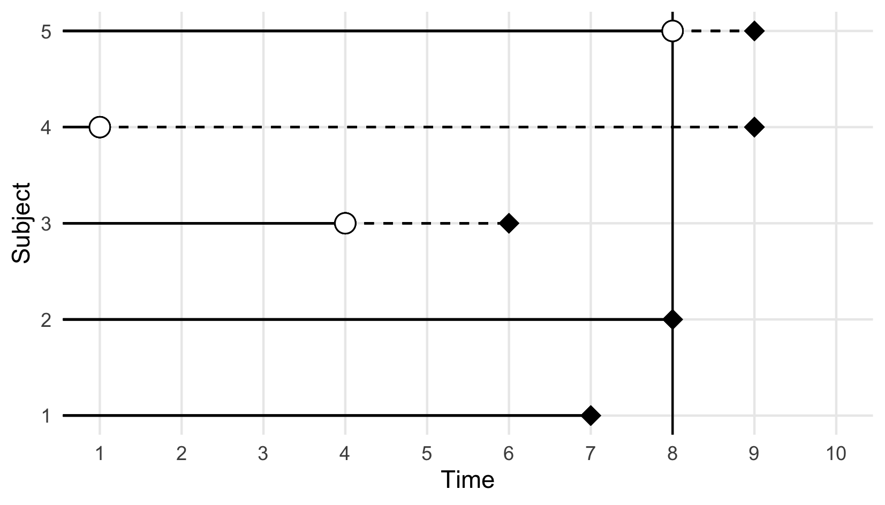

4 Survival Analysis
This page is a work in progress and major changes will be made over time.
TODO
As discussed in the introduction, Survival Analysis is concerned with data where the outcome is a time-to-event. Because the collection of such data takes place in the temporal domain (it takes time to observe a duration), the event of interest is often unobservable. For example, because the event did not occur by the end of the data collection period or because of the occurrence of another event that prevents the event of interest from being observed. In survival analysis terminolgy these are refered to as censoring and competing risks.
This chapter defines these and related terms and introduces basic terminology and mathematical definitions. Section 4.1 starts with the common single-event, right-censored data setting and then extends to further types of censoring as well as truncation. Chapter 5 introduces event-history analysis, which is a generalisation to settings with multiple, potentially competing or recurrent events. Section 6.1 defines common prediction types of survival models, which is particularly important for machine learning based survival analysis. Finally, in order to cleanly discuss machine learning survival analysis, the survival task is introduced in Section 6.2.
While these definitions and concepts are not new to survival analysis, we feel that it is of utmost importance for machine learning practitioners to be able identify and specify the survival problem present in their data correctly, as misspecification cannot be detected by comparing the predictive performance of alternate models. The predictive performance can only detect if one model is better suited to minimize a given obejective function, but not whether or not the obejective function is specified correctly. The latter depends on the (assumptions about the) data generating process and has to be also reflected in the definition of the evaluation measure.
4.1 Survival Data and Definitions
This section describes the basic template for a survival analysis problem and introduces key definitions that will be used throughout this book.
4.1.1 Quantifying the Distribution of Event Times
This section introduces functions that can be used to fully characteristise a probability distribution, termed here as distribution defining functions. Particular focus is given to distribution defining functions that are important in survival analysis.
For now, assume a continuous, positive, random variable \(Y\) taking values in (t.v.i.) \(\mathbb{R}_{\geq 0}\). A standard representation of the distribution of \(Y\) is given by the probability density function (pdf), \(f_Y: \mathbb{R}_{\geq 0}\rightarrow \mathbb{R}_{\geq 0}\), and cumulative distribution function (cdf), \(F_Y: \mathbb{R}_{\geq 0}\rightarrow [0,1]; (\tau) \mapsto P(Y \leq \tau)\).
As discussed in Chapter 1, it is more common to describe the distribution of event times \(Y\) via the survival function and hazard function (often also refered to as hazard rate) than the pdf or cdf.
The survival function is defined as \[ S_Y(\tau) = P(Y > \tau) = \int^\infty_\tau f_Y(u) \ du, \] is the probability of not observing an event until some point \(\tau \geq 0\) and thus simply the compliment of the cdf: \(S_Y(\tau) = 1-F_Y(\tau)\).
The hazard function is given by \[ h_Y(\tau) = \frac{f_Y(\tau)}{S_Y(\tau)}. \]
The hazard function is interpreted as the instantaneous risk to observe an event given that the event has not been observed up until that point. This is not a probability and \(h_Y\) can be greater than one.
The cumulative hazard function (chf) can be derived from the hazard function by \[ H_Y(\tau) = \int^\tau_0 h_Y(u) \ du \]
The cumulative hazard function relates to the survival function by \[ H_Y(\tau) = \int^\tau_0 h_Y(u) \ du = \int^\tau_0 \frac{f_Y(u)}{S_Y(u)} \ du = \int^\tau_0 -\frac{S'_Y(u)}{S_Y(u)} \ du = -\log(S_Y(\tau)) \]
These last relationships are particularly important, as many methods estimate the hazard rate, which is then used to calculate the cumulative hazard and survival probability \[S_Y(\tau) = \exp(-H_Y(\tau)) = \exp\left(-\int_0^\tau h_Y(u)\ du\right). \tag{4.1}\]
Unless necessary to avoid confusion, subscripts are dropped from \(S_Y, h_Y\) etc. going forward and instead these functions are referred to as \(S\) and \(h\) (and so on).
Normally, these quantities could be estimated using standard techniques like regression modeling (estimation of parameters of an assumed distribution). However, in contrast to standard settings, \(Y\) is only observed partially, due to different types of censoring and truncation describeb below.
4.1.2 Single-event, right-censored data
Survival analysis has a more complicated data setting than other fields as the ‘true’ data generating process is not directly observable but instead engineered variables are defined to capture observed information. Let,
- \(X \ t.v.i. \ \mathcal{X}\subseteq \mathbb{R}^p, p \in \mathbb{N}_{> 0}\) be the generative random variable representing the data features/covariates/independent variables.
- \(Y \ t.v.i. \ \mathcal{Y}\subseteq \mathbb{R}_{\geq 0}\) be the (partially unobservable) true survival time.
- \(C \ t.v.i. \ \mathcal{C}\subseteq \mathbb{R}_{\geq 0}\) be the (partially unobservable) true censoring time.
The object of interest in survival analysis is \(Y\). However, in the presence of censoring \(C\), it is impossible to fully observe \(Y\). Instead, the observable variables are given by
- \(T := \min\{Y,C\}\), the outcome time (realisations of this random variable will be refered to as observed outcome time).
- \(\Delta := \mathbb{I}(Y = T) = \mathbb{I}(Y \leq C)\), the event indicator (also known as the censoring or status indicator).
Together \((T,\Delta)\) is referred to as the survival outcome or survival tuple and they form the dependent variables. The survival outcome provides a concise mechanism for representing the outcome time and indicating which outcome (event or censoring) took place.
A survival dataset is a \(n \times p\) Real-valued matrix defined by \(\mathcal{D}= ((\mathbf{x}_1 \ t_1 \ \delta_1) \cdots (\mathbf{x}_n,t_n,\delta_n))^\top\), where \((t_i,\delta_i)\) are realisations of the respective random variables \((T_i, \Delta_i)\) and \(\mathbf{x}_i\) is a \(p\)-dimensional row-vector, \(\mathbf{x}_i = (x_{i1} \ x_{i2} \cdots x_{ip})\).
Finally the following terms are used frequently throughout this book. Let \((t_i, \delta_i) \stackrel{i.i.d.}\sim(T,\Delta), i = 1,...,n\), be observed survival outcomes. Then,
- The set of unique or distinct time-points refers to the set of time-points in which at least one observation experiences the event or is censored, \(\mathcal{U}_O \subseteq \{t_i\}_{i \in \{1,...,n\}}\).
- The set of unique observed event times refers to the set of unique time-points in which an event (and not censoring) occurred, \(\mathcal{U}_D := \{t_{i} : \delta_i = 1\}_{i \in \{1,...,n\}}\). Sometimes the ordered, unique events times are also denoted by \(t_{(i)},\ i=1,\ldots,m \leq n,\ t_{(1)} < t_{(2)} < \cdots < t_{(m)}\).
- The risk set at a given time-point, \(\tau\), is the index-set of observation units at risk for the event just before \(\tau\), \(\mathcal{R}_\tau := \{i: t_i \geq \tau\}\) where \(i\) is a unique row/subject in the data. Consequently, for right-censored data, we have \(\mathcal{R}_0 = \{1,\ldots,n\}\) and \(\mathcal{R}_{\tau} \supseteq \mathcal{R}_{\tau'}, \forall \tau < \tau'\). Note that in a continuous setting, ‘just before’ refers to an infinitesimally smaller time than \(\tau\), in practice as this is unobservable the risk set is defined at \(\tau\).
- The number of observations at risk at \(\tau\) is the cardinality of the risk set, \(|\mathcal{R}_\tau|\), and is denoted by \(n_\tau := \sum_i \mathbb{I}(t_i \geq \tau)\).
- The number of events at \(\tau\) is denoted by \(d_\tau := \sum_i \mathbb{I}(t_i = \tau, \Delta_i = 1).\) Note: For truly continuous variables \(T_i\) we would expect \(d_{t_i} = 1,\forall i=,1\ldots,n\), however, in practice we often observe ties due to finite measurement precision, such that \(d_{\tau} > 1\) occurs quite frequently in real-world datasets.
The quantities \(\mathcal{R}_\tau\), \(n_\tau\), and \(d_\tau\) underlie many models and measures in survival analysis. Particularly non-parametric methods (Chapter 13) like the Kaplan-Meier estimator (Kaplan and Meier 1958) are based on the ratio \(d_\tau \ n_\tau\).
Table 4.1 exemplifies an observed survival dataset with a modified version of the rats data (Therneau 2015), which contains the time until occurence of a tumor (\(\delta_i=1\) if a tumor occured at the outcome time \(t_i\) and \(\delta_i = 0\) otherwise). In this example, the above quantities would be:
- \(\mathcal{U}_0 = \{49, 91, 101, 102, 104\}\): with \(104\) included only once
- \(\mathcal{U}_D = \{49, 102, 104\}\): with the inclusion of \(104\) due to the event at \(t_5\), not censoring at \(t_3\)
- \(\mathcal{R}_{\tau = 102} = \{3, 5, 6\}\) (these rats’ outcome times are greater or equal to \(\tau = 102\) so they are at risk for the event at this time)
- \(n_{\tau = 102} = |\mathcal{R}_{102}| = 3\)
- \(d_{\tau = 102} = 1\): As only \(i = 5\) experienced the event (and not censoring) at this time.
rats (Therneau 2015) time-to-event dataset. Rows are individual observations (\(ID\)), \(\mathbf{x};j\) columns are features, \(t\) is observed time-to-event, \(\delta\) is the event indicator.
| ID (\(i\)) | litter \((\mathbf{x}_{;1})\) | rx \((\mathbf{x}_{;2})\) | sexF \((\mathbf{x}_{;3})\) | time (\(\mathbf{t}\)) | status (\(\boldsymbol{\delta}\)) |
|---|---|---|---|---|---|
| 1 | 1 | 1 | 1 | 101 | 0 |
| 2 | 1 | 0 | 1 | 49 | 1 |
| 3 | 1 | 0 | 1 | 104 | 0 |
| 4 | 2 | 1 | 0 | 91 | 0 |
| 5 | 2 | 0 | 0 | 104 | 1 |
| 6 | 2 | 0 | 0 | 102 | 1 |
- The Kaplan-Meier estimate of the average survival function of the training data survival distribution is the Kaplan-Meier estimator (Section 13.1.1) fit (?sec-surv-setml-meth) on training data \((T_i, \Delta_i)\) and is denoted by \(\hat{S}_{KM}\).
- The Kaplan-Meier estimate of the average survival function of the training data censoring distribution is the Kaplan-Meier estimator fit on training data \((T_i, 1 - \Delta_i)\) and is denoted by \(\hat{G}_{KM}\).
4.1.3 Types of Censoring
In Survival Analysis three types of censoring are commonly defined, right-censoring, left-censoring, and interval-censoring. The latter can be viewed as the most general case with the other types being special cases. Multiple types of censoring and/or truncation (Section 4.1.4) can occur in any given data set and it is vital to identify which types are present in order to correctly select models and measures for the data. Note that below we always assume one type of censoring at a time, while in real data sets different types of censoring (and truncation) can co-occur.
Right-censoring Types
Right-censoring is the most common form of censoring in survival data and it occurs either when an observation is removed from the study before the end and before experiencing the event (for reasons unrelated to the event of interest), or when they experience the event after the observation period. In either case, their true outcome time is unknown, but we do know that it is to the right of the observed censoring time, hence right-censoring.
 <– FIXME: ADD REF TO THESIS IF WE KEEP THIS FIGURE –>
Sometimes, right-censoring is also subdivided into Type-I, Type-II and Type-III censoring. In Type-I, or administrative, censoring occurs at the fixed, pre-defined end of the study \(\tau_u\), in which case the outcome is given by \((T_i = \min(Y_i, \tau_u), \mathbb{I}(Y_i \leq \tau_u))\). Type-II censoring also occurs when the study ends, however, in this case the study ends when a pre-defined number of subjects experienced the event of interest and so \(\tau_u\) is random. Type-III censoring occurs when censoring times randomly follow an unknown distribution and we observe \((T_i=\min(Y_i,C_i), \mathbb{I}(Y_i\leq C_i))\). Different types of right-censoring can, and often do, co-occur in any given data set.
In practice, these different types of right-censoring are usually handled the same during modeling and evaluation and so this book refers to ‘right-censoring’ generally, which could occur from any combination of the above types.
Left-censoring
Left-censoring occurs when the event happens at some unknown time before the study start. While quiet rare in medical settings, this type of data often occurs in sociology studies when retrospective interviews are conducted.
Consider a survey about phone use where smartphone users are all asked the question “How old were you when you used a smartphone for the first time?”. Let \(A_i\) denote the age of the participants during the interview, let \(T_i\) be the time at which they first used a smartphone, and let \(\Delta_i\) be the usual censoring indicator with \(1\) indicating the event of interest and \(0\) otherwise. If the participant remembers the age they first used a phone then \((T_i, \Delta_i) = (Y_i, 1)\) where \(Y_i \leq A_i\). However, if the individual does not remember when the event occured, then they are left-censored at \(A_i\) and \((T_i, \Delta_i) = (A_i, 0)\), where \(A_i < Y_i\).
Interval-censoring
Interval-censoring occurs when the event takes place in some interval within the study period, but the exact time of event is unknown. This often occurs in data resulting from regular or irregular check-ups, as often occurs in electronic health record data. For example, say one patient is checked for skin cancer every year and another every two years. This data would be collected on a yearly scale and over three years may look something like:
| Patient | Year | Status |
|---|---|---|
| 1 | 1 | 0 |
| 1 | 2 | 1 |
| 1 | 3 | 1 |
| 2 | 1 | 0 |
| 2 | 2 | ? |
| 2 | 3 | 1 |
As data is collected annually for patient 1, it is known that they had skin cancer in year 2. On the other hand, patient 2’s data is only collected every other year, so whilst it is known they had cancer in year 3, it is unknown if they already had cancer the year before (assuming for know there’s no method to test how ‘old’ the cancer is). In this case, the second patient is interval censored between years one and three.
Formally, consider \(L_i\) and \(R_i\) two consequitive check-up times for subject \(i\). If the event is observed at \(R_i\) then it must have occurred sometime before then, hence \(Y_i \in (L_i, R_i]\). If no event occured then \(Y_i > R_i\) and \(R_i\) is the right-censoring time.
Censoring Notation
The survival outcome notation defined above, \((T, \Delta)\), can lead to ambiguity when multiple censoring types are present. For example, the survival outcome \((T, 0)\) might indicate right-censoring at time \(T\) or left-censoring at time \(T\). One could resolve this by re-defining the survival tuple such that \((T, -1)\) indicates left-censoring, \((T, 0)\) indicates right-censoring, and \((T, 1)\) indicates no censoring, but this quickly clashes with notation when multiple events of interest may occur (discussed below). Instead the survival outcome may instead be presented as a tuple of times between \((0, \infty)\) which indicate the range at which the event could take place, then if an observation is left-censored at \(\tau\) their outcome is (0, t), as it is known their outcome occurred before \(t\). Alternatively \((t, \infty)\) would indicate right-censoring, and $(t_1, t_2) would indicate interval-censoring. If the event is observed, the range is just the observed time \((t, t)\).
Censoring ‘Dependence’
Censoring may be defined as uninformative if \(Y \perp \!\!\! \perp C\) and informative otherwise. However, these definitions can be misleading as the term ‘uninformative’ could imply that \(C\) is independent of both \(X\) and \(Y\), and not just \(Y\). To avoid misinterpretation, the following definitions are used in this book.
Definition 4.1 (Independent Censoring) Let \((X,T,\Delta,Y,C)\) be defined as above, then
- If \(C \perp \!\!\! \perp X\), censoring is feature-independent, otherwise censoring is feature-dependent.
- If \(C \perp \!\!\! \perp Y\), then censoring is event-independent, otherwise censoring is event-dependent.
- If \((C \perp \!\!\! \perp Y) | X\), censoring is conditionally independent of the event given covariates, or conditionally event-independent.
- If \(C \perp \!\!\! \perp(X,Y)\), censoring is uninformative, otherwise censoring is informative.
Non-informative censoring can generally be well-handled by models as true underlying patterns can still be detected and the reason for censoring does not affect model inference or predictions. However, in the real-world, censoring is rarely non-informative as reasons for drop-out or missingness in outcomes tend to be related to the study of interest. Event-dependent censoring is a tricky case that, if not handled appropriately (by a competing-risks framework), can easily lead to poor model development; the reason for this can be made clear by example. Say a study is interested in predicting the time between relapses of stroke but a patient suffers a brain aneurysm due to some separate neurological condition, then there is a high possibility that a stroke may have occurred if the aneurysm had not. A survival model is unlikely to distinguish the censoring event (aneurysm) from the event of interest (stroke) and will confuse predictions. In practice, the majority of models and measures assume that censoring is conditionally event-independent and hence censoring can be predicted by the covariates whilst not directly depending on the event. For example, if studying the survival time of ill pregnant patients in hospital, then dropping out of the study due to pregnancy is clearly dependent on how many weeks pregnant the patient is when the study starts (for the sake of argument assume no early/late pregnancy due to illness).
4.1.4 Censoring vs. Truncation
While sometimes confused or missnamed, it is very important to differentiate between censoring and truncation, as the methods for handling them differ substantially. Truncation can occur in non time-to-event settings, however this usually refers to truncating (or removing) an entire subject from a dataset. As discussed in Chapter 1, truncation in survival analysis refers to partially truncating a period of time and is quite relevant in survival analysis (for example in multi-state settings, Section 5.2).
In general, while censored observations have incomplete information about the time-to-event, they are still part of the data set. Truncation on the other hand often leads to observations not entering the data set (at least not at time 0). This will usually introduce bias that needs to be accounted for.
Left-truncation
Left-truncation often occurs when study participation is conditional on the occurence of another event. This is best explained through examples:
In a study from the 18th century (brostrom.influence.1987?), when childhood and maternal mortality were relatively high, data was collected on infant survival during the first year after birth based on whether the mother was alive. Data was collected by adding an infant to the study when their mother died, then two other infants, whose mothers were alive, were matched into the study based on their age and features. The age of the infant at entrance into the study therefore signifies a left-truncation event, as infants who die before their mothers never enter the data and the left-truncation time is given by the infants’ age at which the mother died.
More formally, let \(T^l_i\) the subject-specific left truncation time. Then we only observe subjects with \(Y_i > T^l_i\) or \(C_i > T^l_i\). Subjects with \(Y_i < T^l_i\) never enter the data.
Notably, left-truncation also plays an important role when modeling recurrent events or multi-state data, as the data generating process induces left-truncation (Chapter 5).
Right-truncation
Right-truncation often occurs in retrospective sampling based on registry data, that is the registry is querried for cases reported by a certain cut-off time (see for example Vakulenko-Lagun, Mandel, and Betensky (2020)). A common example is the estimation of the incubation period of an infectious disease, that is time from infection to the disease onset. Known cases are entered into a data base. However, at anytime when we querry the data base, we only observe the subset of the infected population that already experienced the disease onset and not the subset with a longer incubation periods.
Formally, let \(T_i^r\) the right-truncation time (here time from infection until the time at which the registry is querried), then subjects only enter the data set when \(T_i < T_i^r\). This is illustrated in Figure 4.1 using 3 subjects. All 3 subjects were infected during the observation period, however, the right-truncation time \(T_2^r\) of subject 2 is shorter than the incubation period \(T_2\) for this subject, thus at the time of querying the data base, this subject will no be included in the sample, as \(T_2 > T_2^r\). Note the difference to right-censoring. If subject 2 was right-cesored, the subject would be in our sample and we would know time of infection, but not the time of disease onset. In case of right-truncation on the other hand, the subject is not included in the sample at time of data extraction, as subject are only included in the registry after disease onset. Overall this leads to a bias towards shorter incubation times and potentially feature values that lead to shorter incubation times.
4.1.5 Objective functions
This section describes how the likelihood is constructed for observations subject to different types of censoring and truncation. For machine learning survival analysis this can be used to construct the objective (or loss) function for any survival task.
This page is a work in progress and major changes will be made over time.